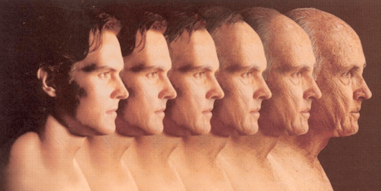

Testosterone is what makes a man, a man. In a society that’s increasingly lacking a positive masculine identity, testosterone has become a hot topic of discussion. Today, I will dispel five of the most common myths associated with the master male hormone.
Myth #1: Declining Testosterone Is Primarily a Result of Aging

Although older age is correlated with lower testosterone levels, aging is not the cause of low T.
I’m sure that you’ve read or heard about the, now famous, Massachusetts Male Aging Study. If not, here’s a quick recap: Researchers found that average testosterone levels in men across the American population dropped by 1.2-1.3% every year from 1987 to 2004 (1). Assuming that this trend has continued at the same pace, the average 40 year old in 2018 has 40% lower T-levels than the average 40 year old did in 1987. In other words, the generational decline in testosterone is taking place independently of age.
In another study, Australian researchers recruited 325 men between the ages of 40-97 with self-reported excellent health. Nine blood samples were collected from each participant over the course of 3-months. When looking at the data across the entire sample size, age had no effect on testosterone (2).
The lesson? You can maintain optimal testosterone levels, no matter how old you are.
Myth #2: Only Older Guys Have to Worry About Low Testosterone
Just like older men write off their “low T” as an inevitable part of aging, younger guys think that youth is what keeps them immune to it. The truth is guys as young as 20 are suffering from sub-optimal testosterone levels.
There is currently no published research on the decline of T in men under 30, but there’s no shortage of anecdotal evidence:
- Scott had a total T-level of 273 ng/dL at the age of 25 (source).
- Oskar had a total T-level of 297 ng/dL at the age of 18 (source).
At 24, my total testosterone level came out at 564 ng/dL. This is a level that falls well within what’s considered the “normal range”. Still, I could barely crawl out of bed each morning, I was skinny-fat, and my sex drive was nowhere to be seen. Since taking the steps to naturally optimize my T, all of these symptoms have completely disappeared.
Any man, regardless of age, can have sub-optimal T. I highly recommend that you have your blood work done at least once per year to get an idea of where you stand and where you need to be.
Myth #3: The Only Way to Increase Testosterone Is With Testosterone Replacement Therapy (TRT)
Is TRT effective at raising T? Of course. Is it the only way to raise T? Hell no.
I naturally increased my total testosterone level from 564 ng/dL to 902 ng/dL and it was all by making simple changes in my diet and lifestyle. My beef with TRT comes down to the fact that it’s basically a band-aid approach. TRT addresses the symptoms of low T while completely ignoring the root cause of low T, which is usually a sub-optimal lifestyle.
When something as simple as sleeping more can boost T-levels by more than 60% (3), is it really wise to jump the proverbial TRT gun before taking the steps to optimize your lifestyle?
Now, I know that a lot of you have had great results with TRT. The thing is, though, that your body is still unable to produce testosterone. And with so much exogenous T coming in, your body has completely shut off its own natural production.
In other words, once started on TRT, you’re effectively chained to using the treatment for the rest of your life – or for as long as you care about getting a boner. Before trying to get a prescription for TRT, fix these 5 lifestyle factors.
Myth #4: Having High Testosterone Increases Your Chances of Developing Prostate Cancer
In the early 40s the medical community began to ascribe prostate cancer as a result of high testosterone. This assumption came from a single medical case study where a patient’s prostate cancer regressed after he was castrated.
Since then, a meta-analysis of 18 studies involving 5,091 patients with prostate cancer and 11,930 controls has reported that there is no link between endogenous testosterone levels and prostate cancer (4).
Myth #5: High Testosterone Makes You Angry
This is a myth mostly peddled by effeminate SJWs and feminists, but it could not be further from the truth. In a study of adolescent boys, researchers found that the boys with the highest levels of T were considered the most socially adept amongst their peers.
And the boys with lower levels of T? They were the ones most prone to the expression of aggressive behavior. They were also failing in school and unpopular with their peers.
Researchers concluded that testosterone levels are positively correlated with social success rather than with physical aggression (5). In another study, men suffering from low T were given testosterone treatments after which they experienced a significant reduction in tension and anger (6). All of this brings us to the conclusion that it is in fact low T that leads to the expression of negative emotions.
This shouldn’t be surprising given the fact that depression is a known side-effect of low T (7) and that anger, hostility and irritability are frequently observed in men diagnosed with depression (8). Could it be that low testosterone is a contributing factor to the expression of toxic masculinity? That low testosterone is contributing to the violent outbursts of anger we so commonly see in the news?
Conclusion
Age is not an excuse. Prescriptions aren’t your only option. High testosterone won’t give you prostate cancer and it won’t make you angry. The fact that you’re reading this right now means that you’re unplugged from mainstream consciousness.
As such, don’t fall for these mainstream myths. Take charge of your hormonal health and become the man you can be.
Read More: 3 Reasons Low Testosterone Is Dangerous For Your Health, And What You Can Do About It